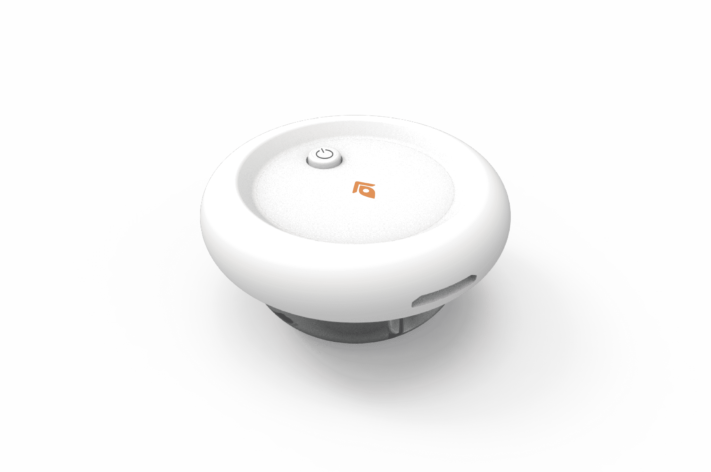
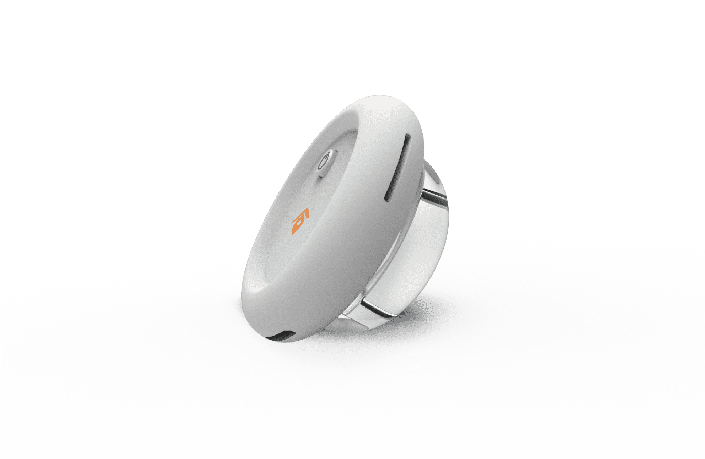
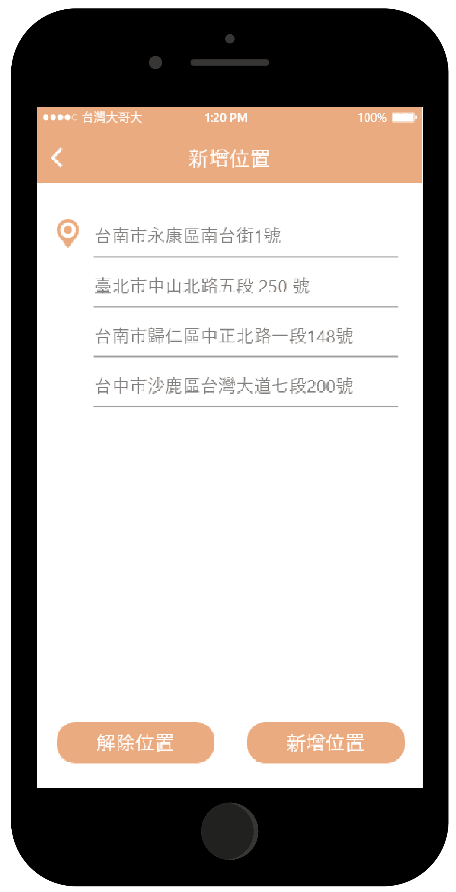
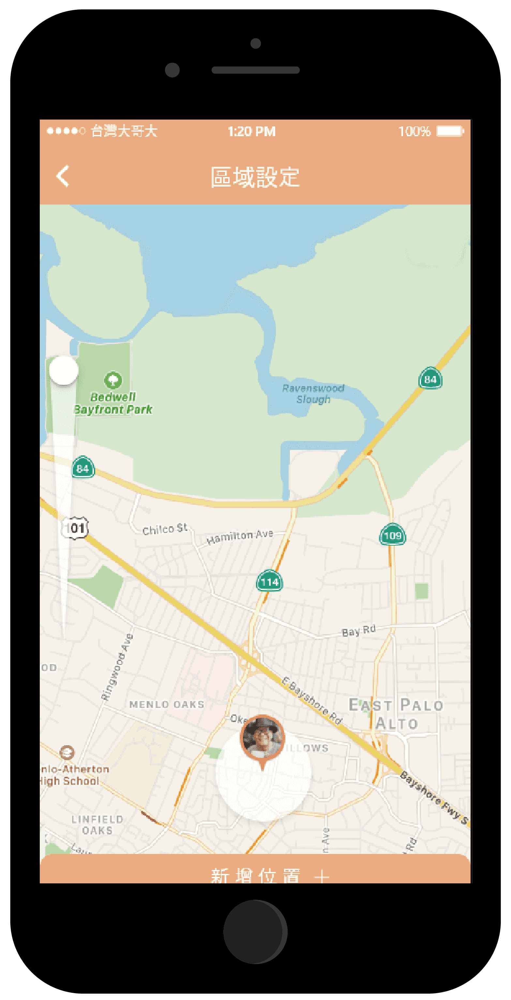
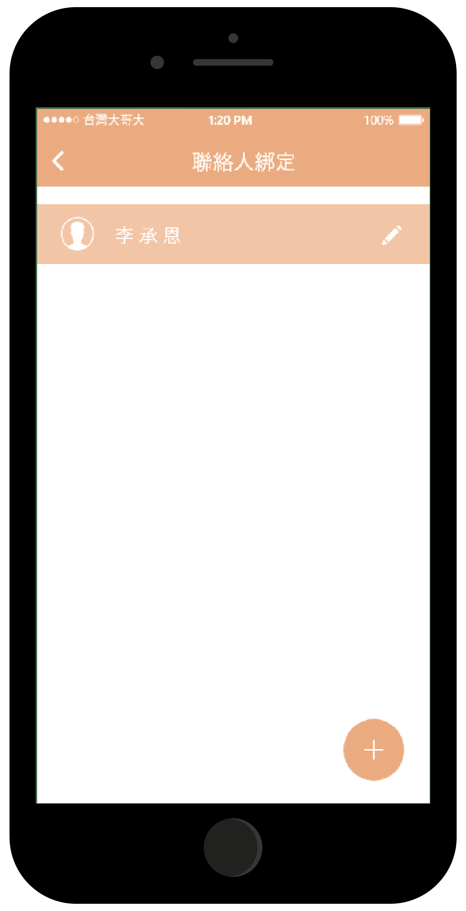

動機
現今高齡化社會，有許多老化後出現問題，我們選擇以高齡輔具相關為發想對象以輕度失智老人為主，因失智症初期症狀會在不熟悉的地方迷路且忘記生活瑣事或攜帶的物品對此我們設計軟硬體連接來協助家屬，使他們能夠更放心隨時掌握家中長者外出位置。
設計理念
以不易被失智長者察覺自身被監控的情況下，設計外觀小巧和簡易的方式自由配戴於長者衣物上配戴硬體於長者衣物上並且同步連接軟體，即使長者獨自外出，也能最即時得知長者動態位置。
產品介紹


介面特點


地點及範圍設定
可設定多個長輩常去的地點，當長輩外出至其他地區時也可隨時新增位置，且可設定規定範圍，當長輩超出範圍時，會發送緊急通知給使用者。

聯絡人與緊急通知
可設定多個聯絡人，即使住在外縣市的親戚也可隨時查看長輩動向，而當長輩離開規定範圍，系統便會自行發出緊急通知，且需當事人面對面才能解鎖，目的是希望當事人能了解嚴重性。